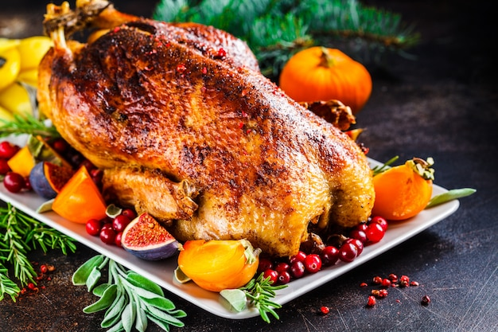

Receta de pavo de Navidad

Ingredientes:
- 1 pavo de aproximadamente 5-6 kg
- 200 g de mantequilla
- 2 cebollas
- 2 zanahorias
- 2 tallos de apio
- 2 dientes de ajo
- 1 limón
- Hierbas frescas como romero, salvia y tomillo
- Sal y pimienta negra molida
- 1 taza de caldo de pollo
Tiempos:
- Preparación: 2 horas
- Cocinar: 6 horas
- Total:8 horas
Pasos:
- Precalentar el horno a 180°C.
- Limpiar el pavo y secarlo con papel de cocina.
- Mezclar la mantequilla con las hierbas picadas, la sal y la pimienta.
- Frotar la mezcla de mantequilla por todo el pavo, asegurándose de cubrir bien.
- Rellenar el interior del pavo con las cebollas, zanahorias, apio, ajo y el limón cortado en cuartos.
- Atar las patas del pavo con hilo de cocina.
- Colocar el pavo en una bandeja para horno y verter el caldo de pollo por encima.
- Cubrir el pavo con papel aluminio y hornear durante 3-4 horas, dependiendo del tamaño del pavo, hasta que esté cocido por completo.
- Retirar el papel aluminio durante los últimos 30 minutos de cocción para dorar la piel del pavo.
- Dejar reposar el pavo durante unos 10-15 minutos antes de cortarlo y servirlo con sus guarniciones favoritas.